<!doctype html>
<html lang="en">
    <head>
        <meta charset="utf-8">
        <meta http-equiv="X-UA-Compatible" content="IE=edge">
        <meta name="viewport" content="initial-scale=1,user-scalable=no,maximum-scale=1,width=device-width">
        <meta name="mobile-web-app-capable" content="yes">
        <meta name="apple-mobile-web-app-capable" content="yes">
        <link rel="stylesheet" href="css/leaflet.css">
        <link rel="stylesheet" href="css/L.Control.Layers.Tree.css">
        <link rel="stylesheet" href="css/qgis2web.css">
        <link rel="stylesheet" href="css/fontawesome-all.min.css">
        <link rel="stylesheet" href="css/leaflet.photon.css">
        <style>
        html, body, #map {
            width: 100%;
            height: 100%;
            padding: 0;
            margin: 0;
            background-color: #e3dfd5 !important;
        }
        .leaflet-container {
            background-color: #e3dfd5 !important;
        }
        .leaflet-image-layer {
            filter: url(#remove-background) !important;
        }
        .leaflet-popup-content {
            max-width: 280px;
            font-family: Georgia, serif;
        }
        .pin-popup h3 {
            margin: 0 0 6px 0;
            font-size: 15px;
            color: #2a2a2a;
            border-bottom: 1px solid #e0d9cc;
            padding-bottom: 6px;
        }
        .pin-popup p {
            margin: 6px 0;
            font-size: 12px;
            color: #555;
            line-height: 1.5;
        }
        .pin-popup .category-tag {
            display: inline-block;
            background: #c8773a;
            color: white;
            font-size: 10px;
            padding: 2px 8px;
            border-radius: 10px;
            margin-bottom: 8px;
            font-family: Georgia, serif;
        }
        .pin-popup .category-tag.beach {
            background: #9dbdc0;
        }
        .pin-popup .category-tag.hike {
            background: #a3b8a3;
        }
        .pin-popup img {
            width: 100%;
            border-radius: 4px;
            margin-top: 6px;
        }
        .pin-popup video {
            width: 100%;
            border-radius: 4px;
            margin-top: 6px;
        }
        .pin-popup .photo-grid {
            display: grid;
            grid-template-columns: 1fr 1fr;
            gap: 4px;
            margin-top: 6px;
        }
        .pin-popup .photo-grid img {
            margin-top: 0;
            height: 100px;
            object-fit: cover;
        }
        </style>
        <title>Kisami Map</title>
    </head>
    <body>
        <svg style="position: absolute; width: 0; height: 0;">
          <defs>
            <filter id="remove-background">
              <feColorMatrix type="matrix" values="
                1 0 0 0 0
                0 1 0 0 0
                0 0 1 0 0
               -3 -3 -3 9 -5" />
            </filter>
          </defs>
        </svg>

        <div id="map"></div>
        <script src="js/qgis2web_expressions.js"></script>
        <script src="js/leaflet.js"></script>
        <script src="js/L.Control.Layers.Tree.min.js"></script>
        <script src="js/leaflet.rotatedMarker.js"></script>
        <script src="js/leaflet.pattern.js"></script>
        <script src="js/leaflet-hash.js"></script>
        <script src="js/Autolinker.min.js"></script>
        <script src="js/rbush.min.js"></script>
        <script src="js/labelgun.min.js"></script>
        <script src="js/labels.js"></script>
        <script src="js/leaflet.photon.js"></script>
        <script src="js/proj4.js"></script>
        <script src="js/proj4leaflet.js"></script>
        <script>
        var map = L.map('map', {
            zoomControl: false,
            maxZoom: 28,
            minZoom: 1
        }).fitBounds([[34.649661, 138.901115],[34.682333, 138.989015]]);

        map.attributionControl.setPrefix('<a href="https://github.com" target="_blank">qgis2web</a> &middot; <a href="https://leafletjs.com">Leaflet</a> &middot; <a href="https://qgis.org">QGIS</a>');

        var zoomControl = L.control.zoom({
            position: 'topleft'
        }).addTo(map);

        var bounds_group = new L.featureGroup([]);
        function setBounds() {}

        // Main map image
        map.createPane('pane_kisami_final');
        map.getPane('pane_kisami_final').style.zIndex = 400;
        var img_bounds = [[34.649661, 138.901115],[34.682333, 138.989015]];
        var layer_kisami_final = new L.imageOverlay('images/kisami_final2.png', img_bounds, {
            pane: 'pane_kisami_final',
            opacity: 1.0
        });
        bounds_group.addLayer(layer_kisami_final);
        map.addLayer(layer_kisami_final);

        // Markers
        var pinOptions = {
            className: 'custom-food-pin',
            html: '<div style="width:14px;height:14px;background:#c9a898;border:2px solid #fff;border-radius:50%;box-shadow:0 1px 4px rgba(0,0,0,0.4)"></div>',
            iconSize: L.point(14, 14),
            iconAnchor: L.point(7, 7),
            popupAnchor: L.point(0, -10)
        };
        var foodMarker = L.divIcon(pinOptions);

        var beachMarker = L.divIcon({
            className: '',
            html: '<div style="width:14px;height:14px;background:#9dbdc0;border:2px solid #fff;border-radius:50%;box-shadow:0 1px 4px rgba(0,0,0,0.4)"></div>',
            iconSize: L.point(14, 14),
            iconAnchor: L.point(7, 7),
            popupAnchor: L.point(0, -10)
        });

        var hikeMarker = L.divIcon({
            className: '',
            html: '<div style="width:14px;height:14px;background:#a3b8a3;border:2px solid #fff;border-radius:50%;box-shadow:0 1px 4px rgba(0,0,0,0.4)"></div>',
            iconSize: L.point(14, 14),
            iconAnchor: L.point(7, 7),
            popupAnchor: L.point(0, -10)
        });

        // --- FOOD & DRINK ---
        var foodLayer = L.layerGroup();

        L.marker([34.6540975, 138.9183131], {icon: foodMarker})
            .bindPopup('<div class="pin-popup"><span class="category-tag">Food & Drink</span><h3>Medicinal Cuisine Cafe</h3><p>Hidden gem serving set meals, drinks, and dessert made of ingredients found locally on the Izu Peninsula.</p><div class="photo-grid"></div></div>', {maxWidth: 300})
            .addTo(foodLayer);

        L.marker([34.655524, 138.919672], {icon: foodMarker})
            .bindPopup('<div class="pin-popup"><span class="category-tag">Food & Drink</span><h3>Maru Cafe</h3><p>Pizza in a garden? Yup.</p><div class="photo-grid"></div></div>', {maxWidth: 300})
            .addTo(foodLayer);

        L.marker([34.657917, 138.925722], {icon: foodMarker})
            .bindPopup('<div class="pin-popup"><span class="category-tag">Food & Drink</span><h3>FermenCo.</h3><p>Sourdough pizza on the beach. Unfortunately didn\'t take any pictures of the actual pizza but trust me when I say it was incredible.</p><div class="photo-grid">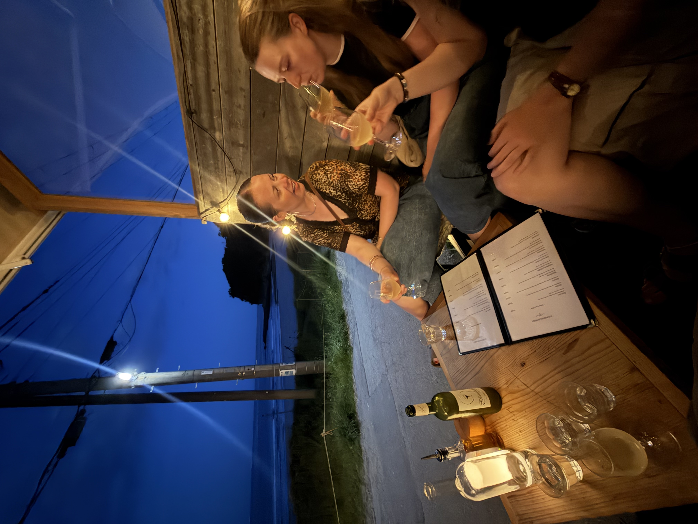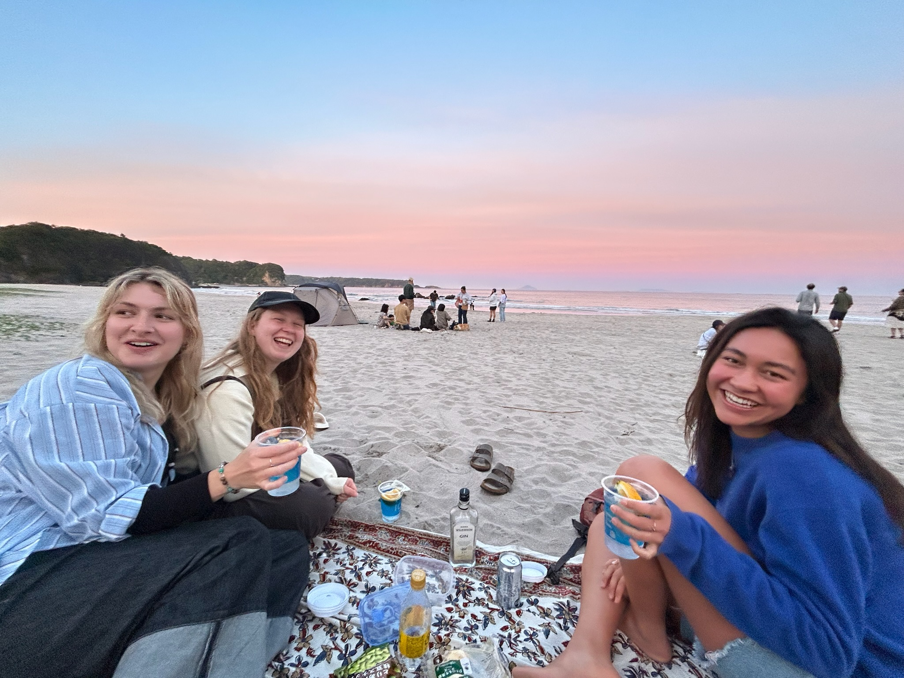</div></div>', {maxWidth: 300})
            .addTo(foodLayer);

        L.marker([34.6771287, 138.9435504], {icon: foodMarker})
            .bindPopup('<div class="pin-popup"><span class="category-tag">Food & Drink</span><h3>Nakanaka Izakaya</h3><p>Delicious food, cozy atmosphere, and yummy drinks.</p><div class="photo-grid">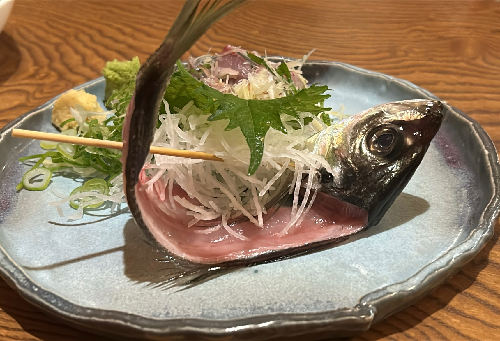</div>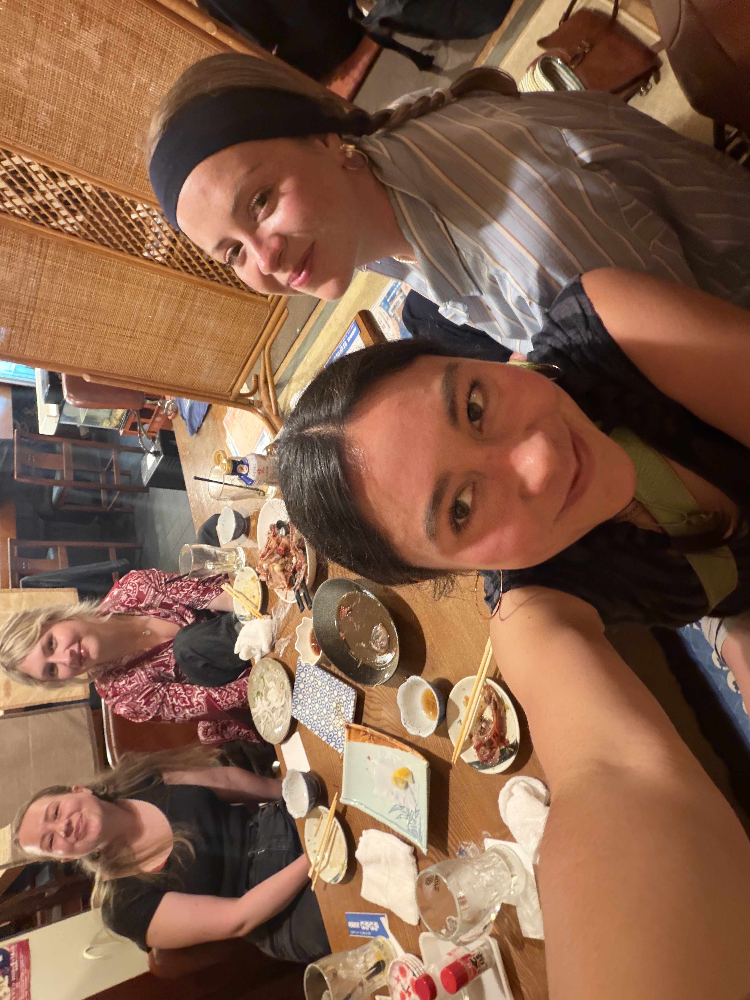</div>', {maxWidth: 300})
            .addTo(foodLayer);

        L.marker([34.654768, 138.9661624], {icon: foodMarker})
            .bindPopup('<div class="pin-popup"><span class="category-tag">Food & Drink</span><h3>Tsuwabuki Cafe</h3><p>Cafe that feels like home, run by an older Japanese couple.</p></div>', {maxWidth: 300})
            .addTo(foodLayer);

        L.marker([34.6750406, 138.9437526], {icon: foodMarker})
            .bindPopup('<div class="pin-popup"><span class="category-tag">Food & Drink</span><h3>Paradise Coffee</h3><p>Local hangout, good coffee, cool events.</p><div class="photo-grid">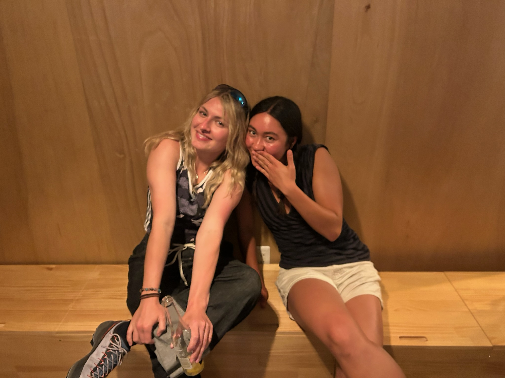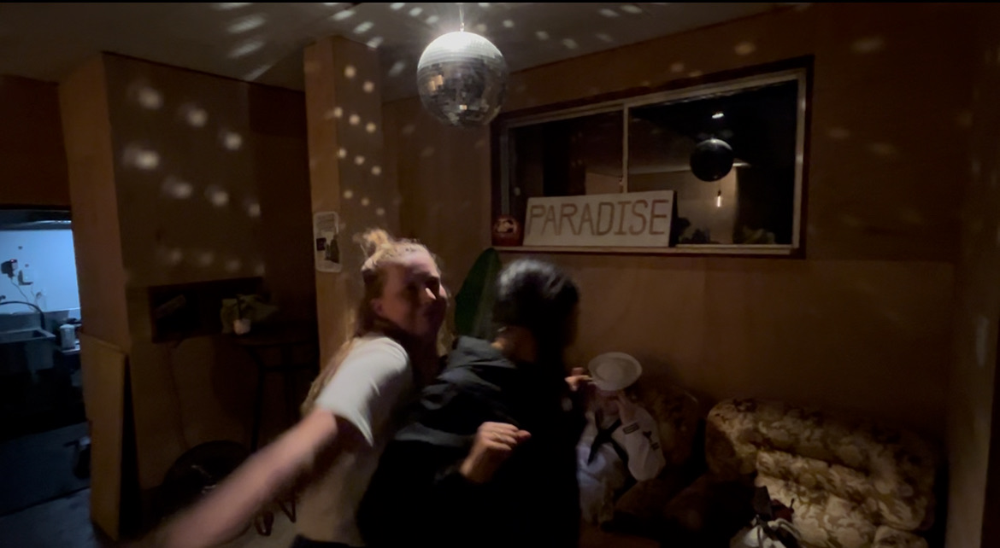</div></div>', {maxWidth: 300})
            .addTo(foodLayer);

        L.marker([34.675835, 138.944453], {icon: foodMarker})
            .bindPopup('<div class="pin-popup"><span class="category-tag">Food & Drink</span><h3>Hanayoshi</h3><p>Delicious a la carte Japanese dishes!</p><div class="photo-grid">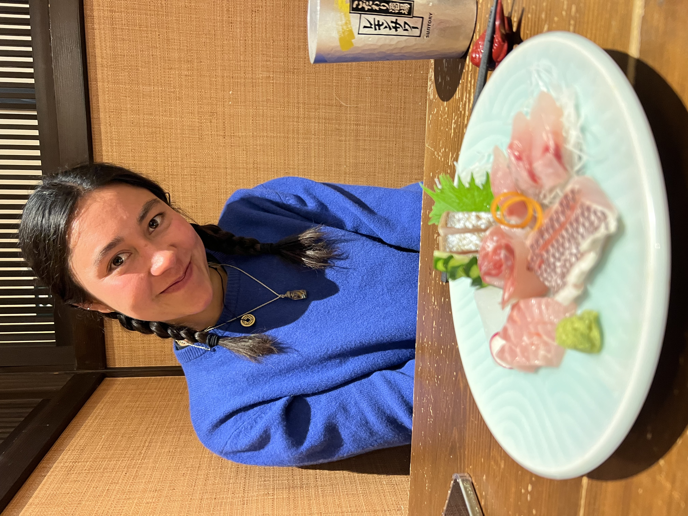</div></div>', {maxWidth: 300})
            .addTo(foodLayer);

        L.marker([34.6588596, 138.926237], {icon: foodMarker})
            .bindPopup('<div class="pin-popup"><span class="category-tag">Food & Drink</span><h3>COPA</h3><p>Cafe with sweet outdoor seating right on Irita beach.</p><div class="photo-grid">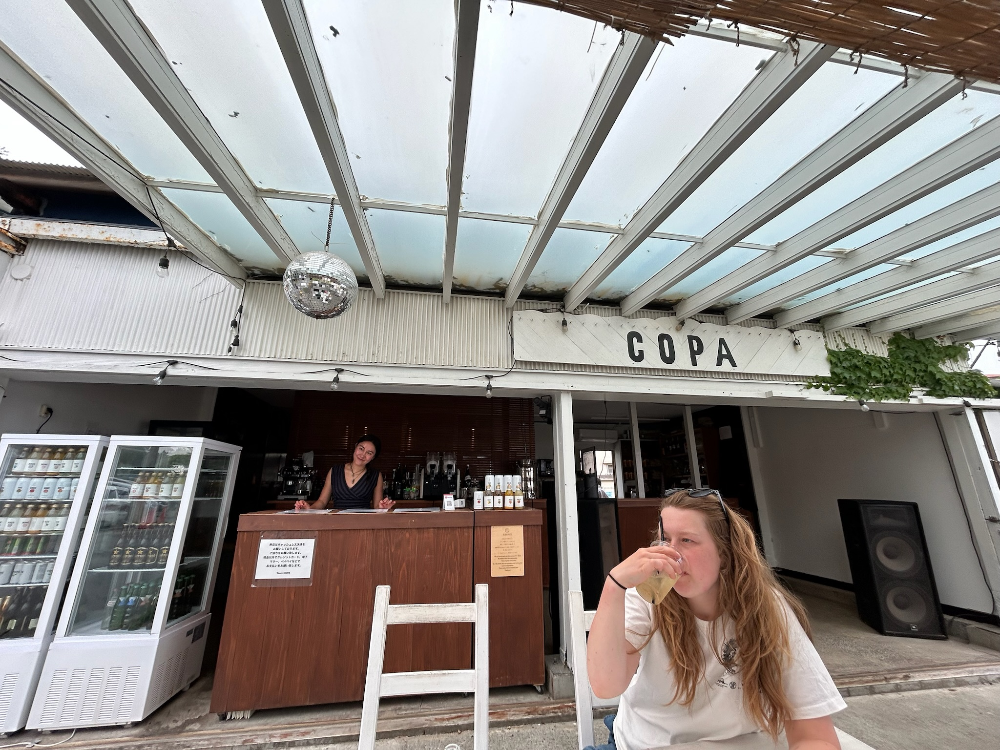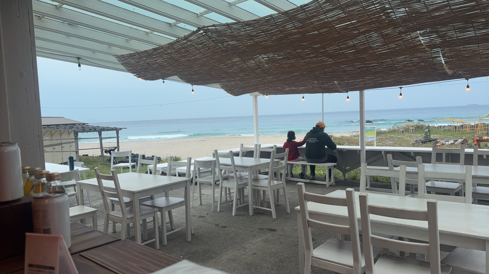</div></div>', {maxWidth: 300})
            .addTo(foodLayer);

        L.marker([34.667468, 138.935900], {icon: foodMarker})
            .bindPopup('<div class="pin-popup"><span class="category-tag">Food & Drink</span><h3>Tsuboya (つぼや)</h3><p>Cafe right by Nabetahama beach built on top of a river.</p>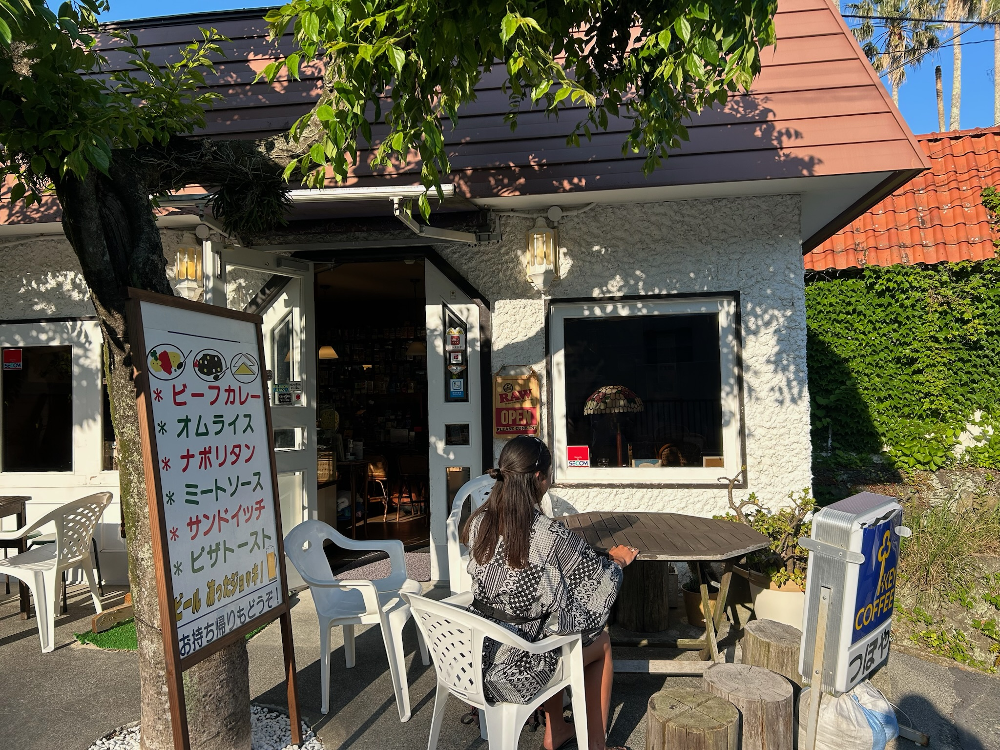</div>', {maxWidth: 300})
            .addTo(foodLayer);

        foodLayer.addTo(map);

        // --- BEACHES & PLACES ---
        var beachLayer = L.layerGroup();

        L.marker([34.653564, 138.919839], {icon: beachMarker})
            .bindPopup('<div class="pin-popup"><span class="category-tag beach">Beaches & Places</span><h3>Ohama Beach</h3><p>Nice beach with good surf and good car access.</p><div class="photo-grid">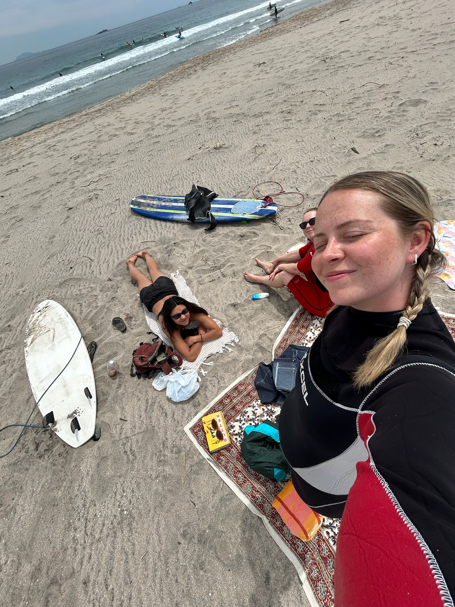</div></div>', {maxWidth: 300})
            .addTo(beachLayer);

        L.marker([34.655504, 138.918717], {icon: beachMarker})
            .bindPopup('<div class="pin-popup"><span class="category-tag beach">Beaches & Places</span><h3>Ohama Beach Bridge</h3><p>A cute little bridge that connects both sides of the beach.</p></div>', {maxWidth: 300})
            .addTo(beachLayer);

        L.marker([34.660866, 138.932435], {icon: beachMarker})
            .bindPopup('<div class="pin-popup"><span class="category-tag beach">Beaches & Places</span><h3>Tatadohama Beach</h3><p>Good for surf (long and shortboarding).</p>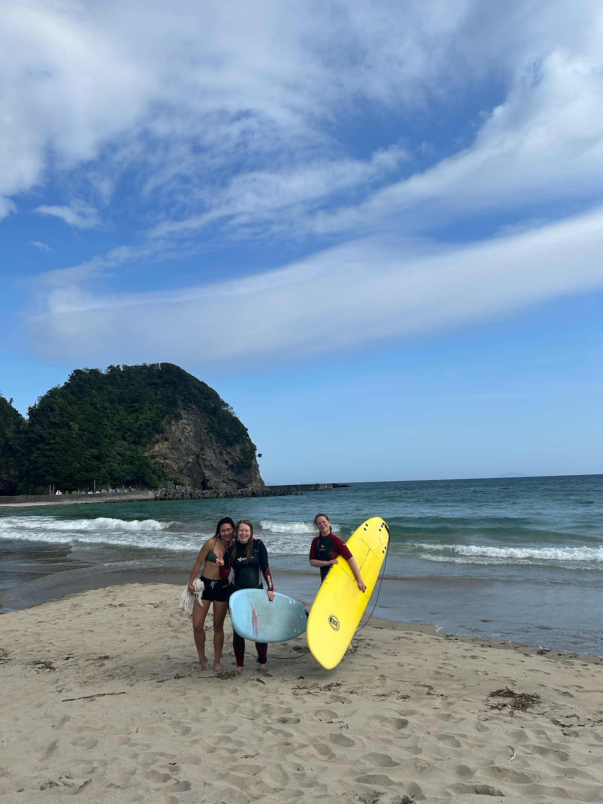</div>', {maxWidth: 300})
            .addTo(beachLayer);

        L.marker([34.666748, 138.936084], {icon: beachMarker})
            .bindPopup('<div class="pin-popup"><span class="category-tag beach">Beaches & Places</span><h3>Nabetahama Beach</h3><p>Small bay surrounded by forest and rock. Calm water ideal for swims.</p></div>', {maxWidth: 300})
            .addTo(beachLayer);

        L.marker([34.658398, 138.926795], {icon: beachMarker})
            .bindPopup('<div class="pin-popup"><span class="category-tag beach">Beaches & Places</span><h3>Irita Beach</h3><p>Pretty beach with a few cafes nearby.</p><video controls><source src="images/irita.MOV" type="video/mp4"></video></div>', {maxWidth: 300})
            .addTo(beachLayer);

        L.marker([34.6536562, 138.9652135], {icon: beachMarker})
            .bindPopup('<div class="pin-popup"><span class="category-tag beach">Beaches & Places</span><h3>Hiromi SPA Hotel</h3><p>Stayed in the dorms with the girls! Weird vibe but beautiful area.</p><div class="photo-grid">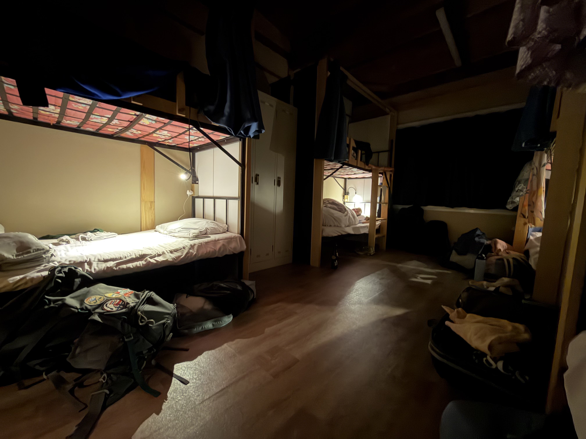</div>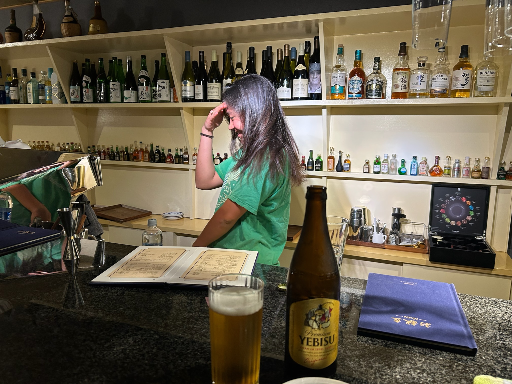</div>', {maxWidth: 300})
            .addTo(beachLayer);

        L.marker([34.655053, 138.916448], {icon: beachMarker})
            .bindPopup('<div class="pin-popup"><span class="category-tag beach">Beaches & Places</span><h3>Ohama Tunnel</h3><p>Tunnel connecting Kisami and the southern tip of Izu.</p></div>', {maxWidth: 300})
            .addTo(beachLayer);

        L.marker([34.671652, 138.943207], {icon: beachMarker})
            .bindPopup('<div class="pin-popup"><span class="category-tag beach">Beaches & Places</span><h3>Perry Road</h3><p>Picturesque road on the outskirt of town.</p><div class="photo-grid">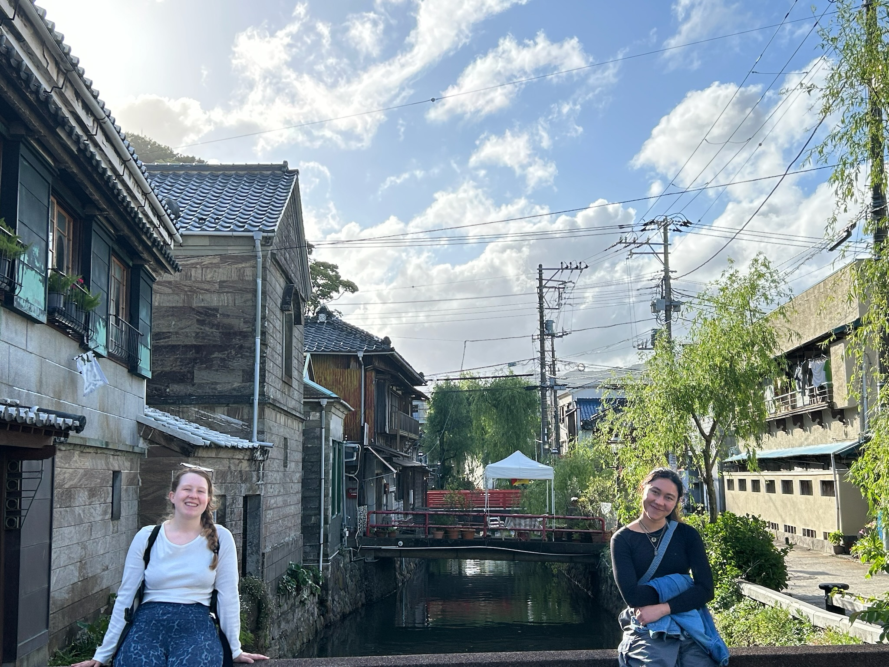</div></div>', {maxWidth: 300})
            .addTo(beachLayer);

        L.marker([34.668329, 138.940860], {icon: beachMarker})
            .bindPopup('<div class="pin-popup"><span class="category-tag beach">Beaches & Places</span><h3>Bay Near Shimoda Town</h3><p>Peaceful escape walking distance from Shimoda town.</p></div>', {maxWidth: 300})
            .addTo(beachLayer);

        L.marker([34.660388, 138.985433], {icon: beachMarker})
            .bindPopup('<div class="pin-popup"><span class="category-tag beach">Beaches & Places</span><h3>Ikenodan Beach</h3><p>Really peaceful bay.</p>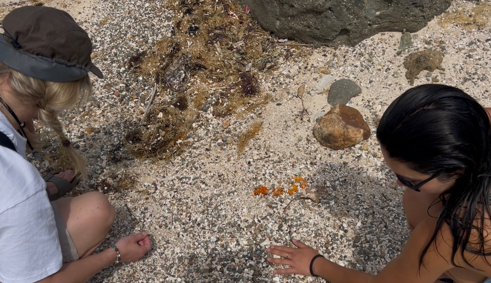<video controls><source src="images/ikenodan.MOV" type="video/mp4"></video></div>', {maxWidth: 300})
            .addTo(beachLayer);

        L.marker([34.661144, 138.983281], {icon: beachMarker})
            .bindPopup('<div class="pin-popup"><span class="category-tag beach">Beaches & Places</span><h3>Tsumekizaki Flower Garden</h3><p>Flower garden and greenhouse.</p><video controls><source src="images/greenhouse.MP4" type="video/mp4"></video></div>', {maxWidth: 300})
            .addTo(beachLayer);

        L.marker([34.659902, 138.981786], {icon: beachMarker})
            .bindPopup('<div class="pin-popup"><span class="category-tag beach">Beaches & Places</span><h3>Cape Tsumeki Bay</h3><p>Secluded bay on Tsumeki cape.</p><video controls><source src="images/capetsumeki.mov" type="video/mp4"></video></div>', {maxWidth: 300})
            .addTo(beachLayer);

        beachLayer.addTo(map);

        // --- WALKS + HIKES ---
        var hikeLayer = L.layerGroup();

        L.marker([34.667190, 138.938941], {icon: hikeMarker})
            .bindPopup('<div class="pin-popup"><span class="category-tag hike">Walks + Hikes</span><h3>Walk to Nabetahama</h3><p>View of the walk from town to Nabeta!</p><video controls><source src="images/walkingtonabeta.mov" type="video/mp4"></video></div>', {maxWidth: 300})
            .addTo(hikeLayer);

        hikeLayer.addTo(map);

        // Layer control
        var overlaysTree = [
            {label: "🍵 Food & Drink", layer: foodLayer},
            {label: "🏖️ Beaches & Places", layer: beachLayer},
            {label: "🥾 Walks + Hikes", layer: hikeLayer},
            {label: "🗺️ Map", layer: layer_kisami_final},
        ];

        var lay = L.control.layers.tree(null, overlaysTree, {
            collapsed: true,
        });
        lay.addTo(map);
        setBounds();

        L.ImageOverlay.include({
            getBounds: function () {
                return this._bounds;
            }
        });
        </script>
    </body>
</html>
